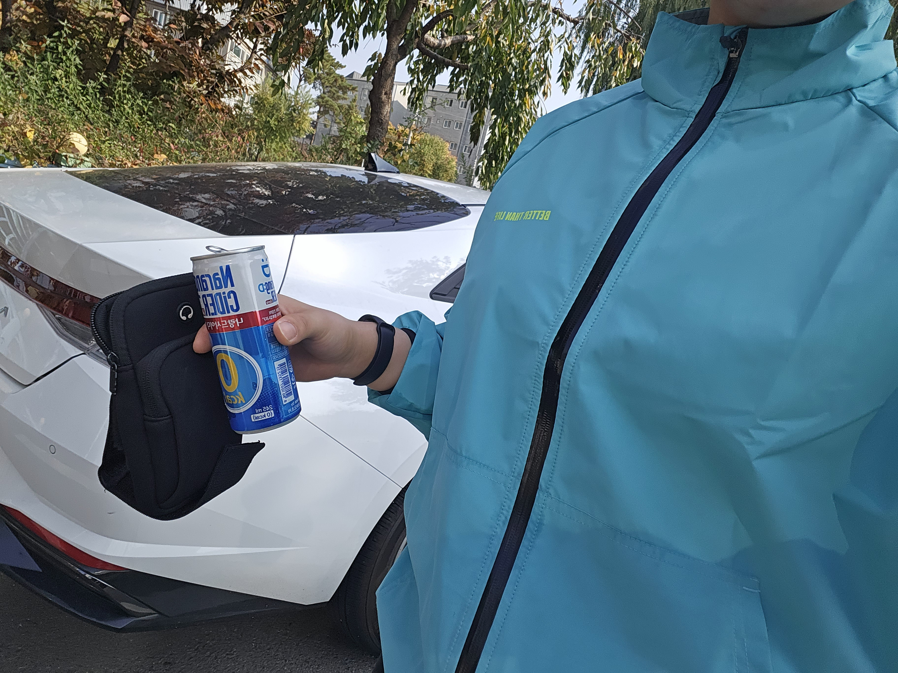
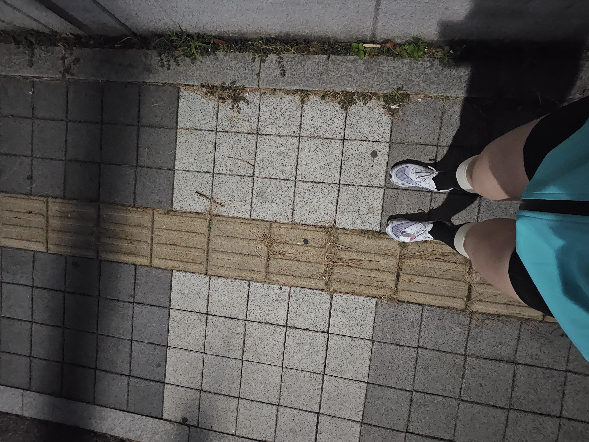
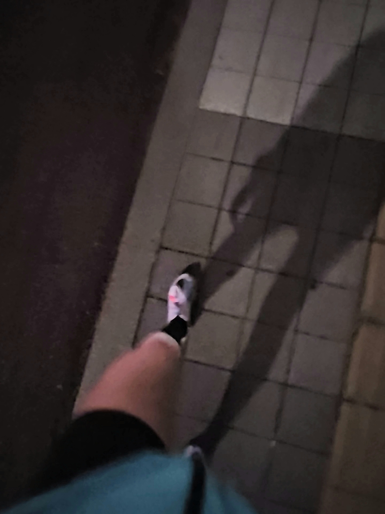
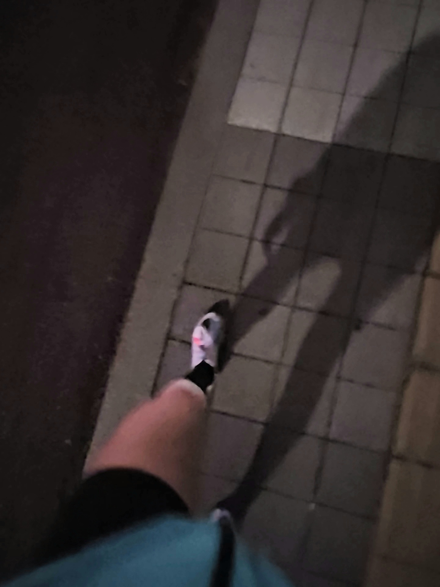

저에게는 이번 대회가 작년에 이어 두번째 마라톤대회였는데 급하게 결정된 일이라 보름 조금 넘는 시간을 준비하게됬습니다. 그래도 혼자 출전한 작년 보다는 런닝 동호회분들과 함께 연습해서 꾸준하고 열심히 할 수 있었습니다. 연습 때마다 10km를 뛰진 않았고 보통 6~8키로 정도 러닝연습을 했습니다. 아무래도 저 말고는 동호회분들은 직장인이셔서 주중에 10km씩은 무리라 생각됬습니다. 올해는 한파가 일찍 찾아와 날씨도 너무 추웠거든요.. 그래도 주3회 이상 러닝하고 평소에 했던 웨이트 트레이닝 방식이 아닌 러닝에 도움되는 웨이트 트레이닝 루틴으로 변경하여 열심히 준비했습니다!
  

작년 첫 대회 기록이 52분대로 완주가 목표였던 저로선 나름 좋은 기록이 나와 올해 대회는 입상하고 싶다는 생각이 있었지만 작년에 비해 체중 증량도 되었고 잦은 야외런닝을 하지 않은 터라 사실 자신은 없었습니다. 두번째 대회이고 욕심이 진짜 많은 저는 기록 단축을 무조건 해야된다는 생각이 커서 혼자 부담도 됬는데('Fun'런이라면서..) 회원 한분이 "에이~기록단축 못하면 작년에 내가 너무 대단했나보다!! 하면되지~" 이러는데 웃기고 ㅋㅋㅋㅋㅋ부담을 덜었습니다.(욕심은 안 덜어지더군요.) 동호회 개설했을 당시 러닝 입문자셨던 이 회원님은 처음에는 많이 뒤쳐졌지만 마라톤 준비과정을 지나면서 연습량과 페이스가 저랑 거의 비슷 할 정도로 성장하셨습니다. 또 진심으로 러닝을 즐겨하시는 모습에 더욱 뿌듯했고 저에게도 큰 힘이 되었습니다. 또 다른 회원님은 부상이 있으셔서 고생하셨는데 쉬어가면서 연습을 하시고 대회 날까지 무리없이 함께 하셨습니다.
이렇게 준비과정을 통해 내 페이스, 러닝 시 특징, 미드 풋, 호흡 등 나의 러닝 장단점을 알고 다 잡아갈 때쯤 대회날이 되어 아쉬움 반, 설렘 반으로 여의도 한강공원으로 가게 됩니다!!